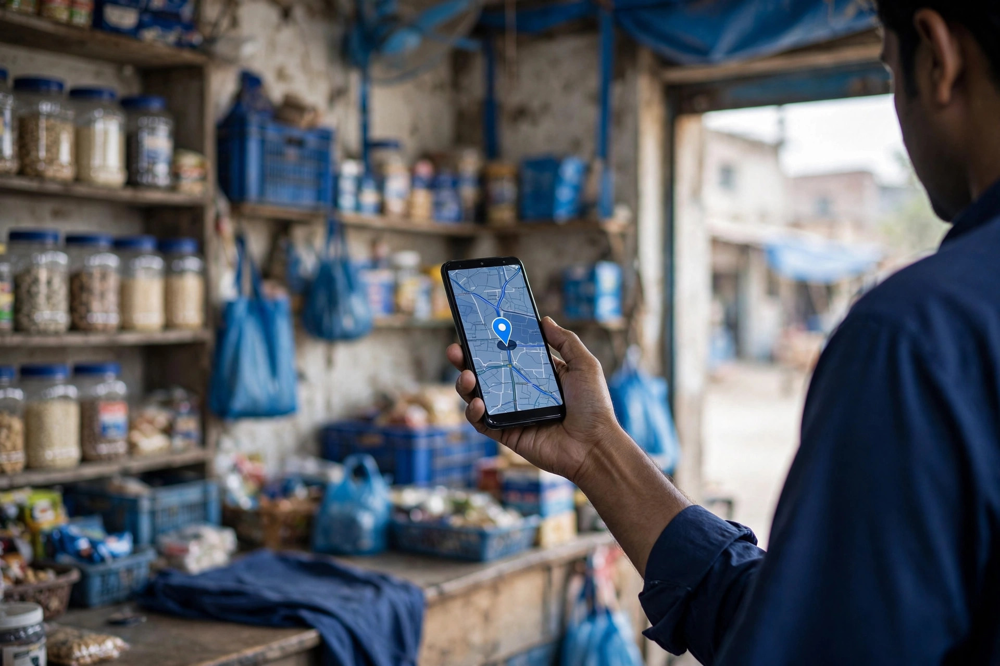

Zaheer Seo Expert is based in Layyah. This page explains how shops, service providers and online sellers in the city can turn Google searches into calls, visits and enquiries, with the work handled locally, from the first audit to clear monthly reporting.
When someone in Layyah needs a product or a service today, the search usually starts on a phone. They open Google or Maps, type what they need, and contact one of the first businesses they see. If your shop or service is not visible in that moment, the customer calls the competitor who is.
Because Zaheer Seo Expert works from Rana Nagar in Layyah, you can sit down in person and plan your SEO properly. The work is shaped by how people in this district actually search, in English, Urdu or Roman Urdu, and by what your Layyah competitors are already doing on Google.
Almost any business that serves customers in Layyah city or the surrounding district can gain from better Google visibility. These are the ones that usually see the clearest benefit.
Bazaar and market shops that appear on Google and Maps when people search for products nearby instead of only relying on passing trade and regular customers.
Clinics, dentists, pharmacies and labs that patients look up on Google before visiting, checking location, timings and reviews first.
Private academies, schools and tuition centres that parents and students compare on Google at admission time each year.
Restaurants, bakeries and fast food businesses that win orders when hungry customers search for food near them on Maps.
Workshops, electricians, plumbers and other service providers who get found through near me searches when something breaks down.
Sellers in Layyah who ship across Pakistan and need product pages that rank in Google, not only social media posts.
Every service below is handled by Zaheer Seo Expert in Layyah and can be combined into one monthly plan built around your goals.
Complete setup and optimization of your Google Business Profile and Maps presence, so Layyah customers find accurate details, services and photos when they search.
Titles, headings, content and internal links on every page improved so Google understands exactly which services you offer and where.
Site speed, mobile usability, indexing and other technical issues checked and fixed, so nothing quietly holds your rankings back.
Research into the exact words Layyah customers type into Google, mapped to your pages so each page targets searches that can bring business.
Product and category page optimization for online stores, helping Layyah sellers compete in Google Shopping and organic results across Pakistan.
Careful, relevant link building and local citations that strengthen your website authority without risky shortcuts or spam.
A simple four step process, explained in plain words before any work begins.
Your website, Google Business Profile and Layyah competitors are reviewed first, and the findings are explained to you honestly.
We agree the search terms, pages and local signals that matter most for your business, then fix a monthly work plan.
Your profile, pages and content are optimized step by step, and you can visit the Layyah office to discuss progress any time.
You receive a clear monthly report covering rankings, profile views, calls and the work completed, with next steps.
The business is based at Rajan Shah Road, Rana Nagar, Chak 116 TDA, Layyah, Punjab. Local clients can meet in person, and everything can also be handled by phone, WhatsApp or email if that is easier.
Yes. For Layyah based businesses, an in person meeting can be arranged so we can look at your products, services and customers properly before planning the work.
SEO is gradual. Some profile and on-page improvements can help within weeks, while stronger ranking changes usually build over a few months depending on competition and the starting condition of your website. No honest SEO provider can guarantee a fixed position.
A Google Business Profile is essential for Maps and local searches, and for many Layyah businesses it is the best first step. A website gives you more control and more pages to rank, so the strongest setup uses both together.
Zaheer Seo Expert is based in Layyah and also serves businesses in these nearby areas, mostly online with the same monthly reporting.

Send your website or Google Business Profile details for a free audit. You will get an honest review of where you stand and what to fix first.
Request Your Free Audit